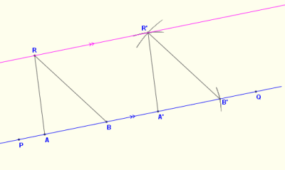

This page shows how to construct a line parallel to a given line through a given point with compass and straightedge or ruler.
This construction works by creating any triangle between the given point and the given line, then copying (translating) that triangle any distance along the given line. Since we know that a translation can map the one triangle onto the second congruent triangle, then the lines linking the corresponding points of each triangle are parallel, and we can create the desired parallel line by linking the top vertices of the two triangles.
See also:
The above animation is available as a printable step-by-step instruction sheet, which can be used for making handouts or when a computer is not available.
This construction works by creating a triangle and then translating (sliding) the triangle along the given line. All corresponding vertices of a translated polygon are linked by lines that are congruent and parallel.
This can be seen more clearly in the animation at Translating a Polygon. (In that animation, check the "Show Lines" box ).

| Argument | Reason | |
|---|---|---|
| 1 | Triangle ARB and A'R'B' are congruent | By construction. A'R'B' was copied from ARB. For method and proof see Copying a triangle |
| 2 | AB and A'B' are collinear. | All four points lie on PQ |
| 3 | A'R'B' is a translation of ARB. | The two triangles are congruent (from 1) and not rotated (from 2) and not reflected (by construction). |
| 4 | RR' is parallel to AA' | Lines linking the corresponding vertices of translated polygons are parallel. See Properties of translated polygons |
| 5 | RR' is parallel to PQ | From (2) - AA' is parallel to PQ because they are collinear. |
Click here for a printable parallel line construction worksheet containing two problems to try. When you get to the page, use the browser print command to print as many as you wish. The printed output is not copyright.